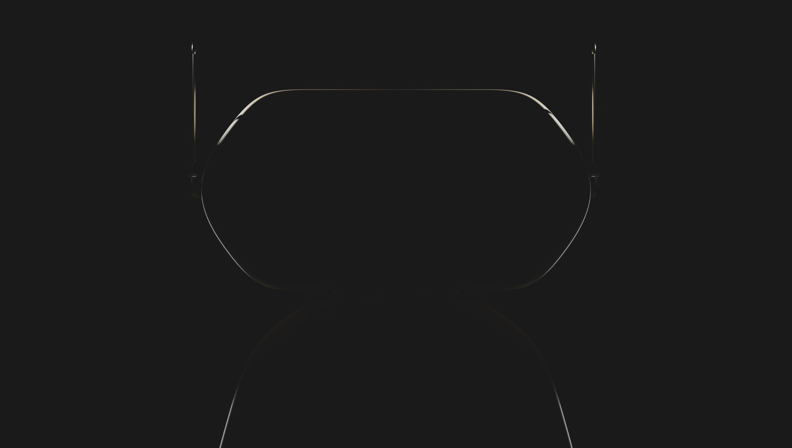
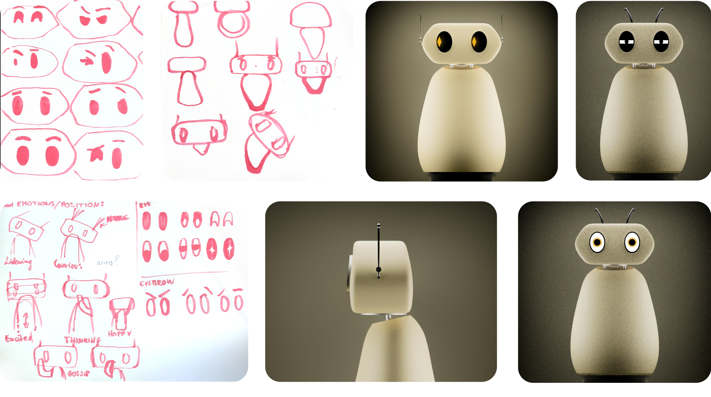
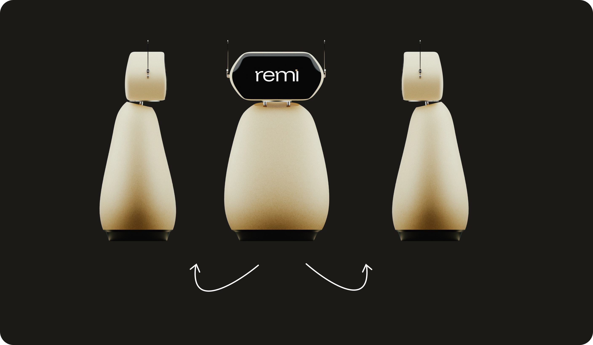
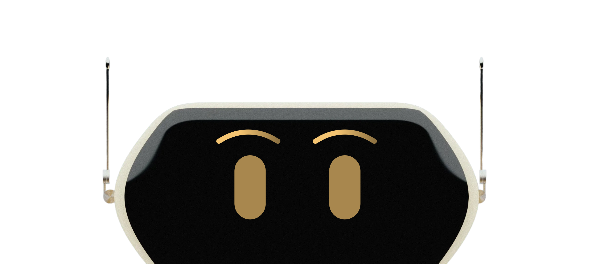
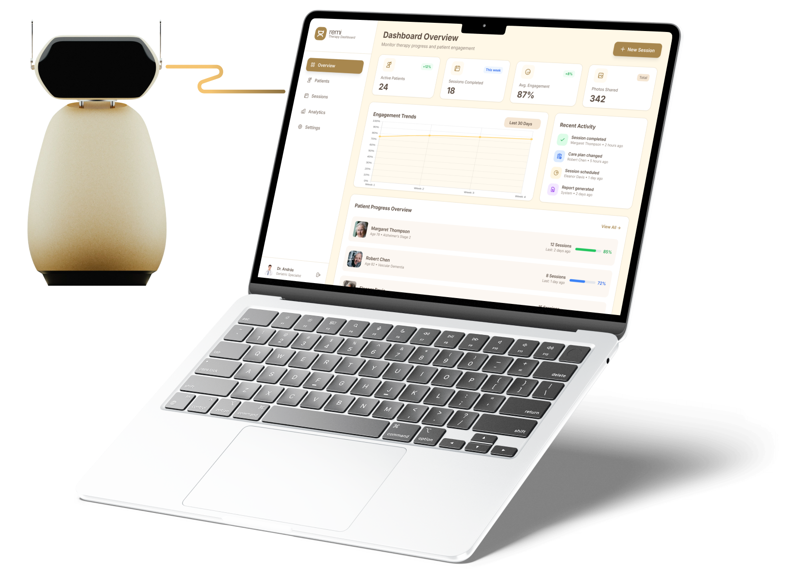
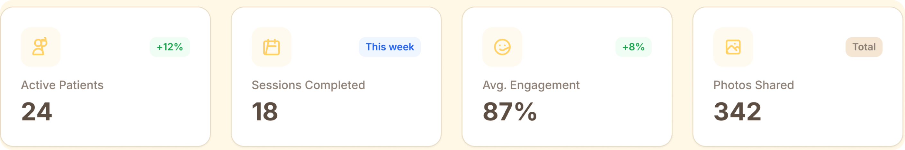
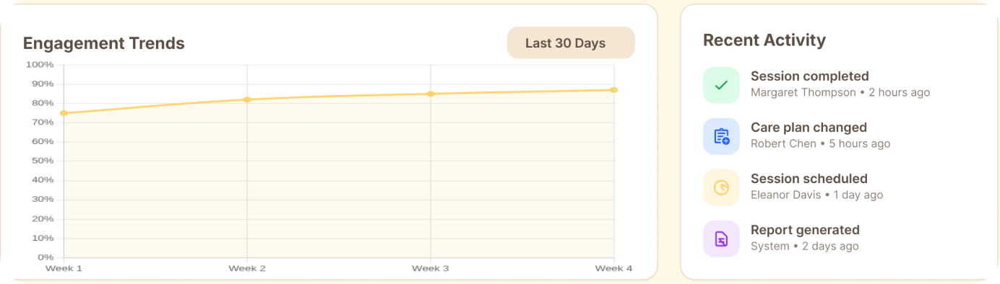
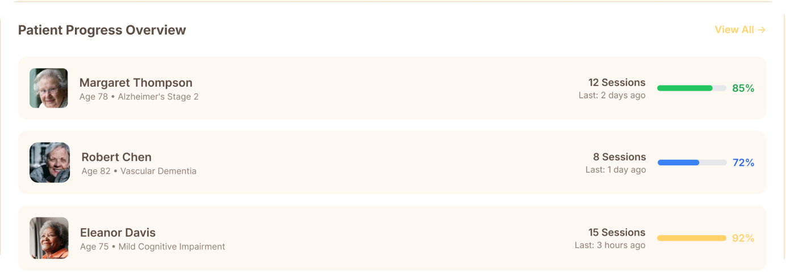

Case study · Product / robot design & HRI
„Hogy a múlt fénye ne tudjon kialudni” · So the light of the past may never fade
A quiet companion device that uses Photo Reminiscence Therapy to help nursing home residents with dementia hold onto their memories a little longer.
Overview
A companion for remembering
Dementia is rising fast across Europe, and there are therapies that help. One of them, Photo Reminiscence Therapy, uses old photos and videos to train long-term memory. But in Hungarian nursing homes there simply aren't enough people to offer it regularly.
In February 2026, MOME hosted a one-week Human–Robot Interaction intensive led by David Yann Robert, at the time Director of Human–Robot Interaction Design at Boston Dynamics. In that week, our team of three designed remi: a calm, slightly clumsy companion robot that runs reminiscence sessions with residents and gives health professionals the data to follow their progress.
- 8M
- people in Europe live with cognitive decline (WHO)
- 30–35%
- vacancy rates among Hungarian health professionals
- 1
- week from brief to working demo
The process
A one-week sprint squeezes the whole process into a few intense days. We went from research to a defined role for the robot, then explored its personality and form, and delivered a working demo that we tested.
01 · Discover
- Desk research
- Dementia statistics
- Care workforce gap
- Target audience
- Photo Reminiscence Therapy
02 · Define
- Problem statement
- How might we…
- Role of remi
03 · Develop
- Robot personality
- Roleplaying sessions
- Sketches & clay models
- Build
04 · Deliver
- Final robot design
- Medical dashboard
- Demo
- Testing & evaluation
Discover
Research & planning
We had one week, so research had to be fast and focused. We started from the scale of the problem, then looked at what already works and who it is failing to reach.
Research plan
- 01
Desk research
Dementia statistics from the WHO and the cost of dementia care in Hungary.
- 02
Care system context
The Hungarian healthcare workforce gap and what it means for nursing homes.
- 03
Therapy research
Existing non-drug methods, especially Photo Reminiscence Therapy.
- 04
Target audience
Residents in the critical window and the professionals who care for them.
The scale of the problem
Dementia is growing faster than care can keep up
People in Europe with cognitive decline
×3 by 2050 · Source: World Health Organization
~€847M
per year: total national dementia costs in Hungary (321.4 billion HUF)
30–35%
vacancy rates among health professionals: not enough people to deliver therapy (Hungarian Chamber of Health Professionals, Betlehem et al. 2024/25)
What we found
- 01Good methods existNon-drug therapies for dementia work.
- 02They aren't well knownIn Hungary, these methods are not widely used.
- 03There aren't enough handsStaff shortages make regular therapy impossible.
Target audience
Two users, one care moment
remi serves residents directly, but it only works if it also helps the professionals around them.
Primary users
- Residents of Hungarian nursing homes
- Diagnosed with dementia
- Ages 70–85: the critical, high-risk intervention window (National Library of Medicine)
Secondary users
- Health professionals: nurses, caregivers and therapists
- Working in elderly care homes
- Need to follow residents' progress without extra workload
The method
What is Photo Reminiscence Therapy?
PRT uses stimulating materials, such as old photos and videos, to train long-term memory. It is simple, personal and proven to have cognitive benefits, but it needs someone to sit down with each resident, again and again.
Source: National Institute for Dementia Education, Dementia Research: Cognitive Benefits of Photo Reminiscence Therapy for Dementia Patients (2022)
Define
From a care gap to a clear role
Research gave us three facts: the therapy works, it isn't widely used in Hungary, and there aren't enough people to deliver it. That pointed us to a specific job for a robot: not replacing carers, but taking on the repetitive part of the therapy.
Problem statement
Dementia therapy works, but Hungarian nursing homes don't have the people to deliver it.
Good non-drug methods exist, yet they are little known in Hungary, and with 30–35% of healthcare positions unfilled, regular one-on-one sessions are out of reach.
Role of remi
Four jobs for one quiet companion
01
Photo Reminiscence Therapy
Runs sessions with old photos and videos to train long-term memory.
02
Make therapy fun
Turns therapy into an engaging, social moment rather than a task.
03
Daily reminders
Reminds residents of pills, events, the time and the date.
04
Progress data
Evaluates progress and shares it with health professionals.
A companion residents want to talk to, and a tool carers can rely on.
Develop
Designing a character
For a robot that talks to people with dementia, the interface is its voice, its pauses and its face. We designed the personality first, tested it by roleplaying, and only then shaped the body.
Personality
Polite, curious and a little clumsy
- Vibe
- Polite, curious and slightly “playful-clumsy”. Not perfect, so residents feel at ease.
- Tone
- Warm, optimistic and modest.
- Interaction examples
- Engages in harmless gossip. Asks follow-up questions between sessions, so it feels like remi remembers.
Roleplaying & iterations
Acting it out before building it
Before designing anything, we roleplayed therapy sessions ourselves, one of us as remi, one as a resident. It was the closest we could get to knowing whether the experience actually felt like care. Then we sketched and modelled the form.

Deliver
remi, the final design
A soft, lamp-like companion with a simple screen face, and a dashboard that turns every session into useful information for carers.

The face
remi's face is a dark screen with simple shapes. We didn't need a detailed face: people instantly complete it into an expression, and the eyebrows carry most of the emotion.


Medical dashboard
Data for the people who care
Every session feeds a dashboard for nurses and therapists: engagement over time, recent activity, and an overview of each resident's progress.
- Proximity
- Key numbers sit side by side at the top, read as one overview.
- Common region
- Each block (trend, activity, residents) lives in its own card.
- Similarity
- Residents are listed in identical rows, easy to scan and compare.



I chose to show what a nurse or therapist needs at a glance: how many residents are active, how many sessions happened, average engagement and photos shared. Below that, the engagement trend shows whether therapy is working over time, and each resident's sessions and progress show who needs attention next.
Demo
remi in action
Two demo videos: a roleplayed session in a care-home-like setting.
Testing & evaluation
What testers thought
We tested the idea with colleagues, collecting both quantitative ratings and qualitative feedback.
4.5/ 5
on how good the solution is
75%
of the people asked liked the design
100%
suggested adding eyebrows
Every tester asked for eyebrows, so we added them. Small as they are, they made remi's expressions much easier to read, which is exactly what the closure principle predicts.
Reflection
Designing remi taught me that in a product like this, the “UI” can be the voice, the eyebrows, or even a calculated long pause.
The hardest and most valuable part of the process was roleplaying the therapy ourselves before designing anything. This was the closest we could get to knowing whether the experience actually felt like care.
So the light of the past may never fade